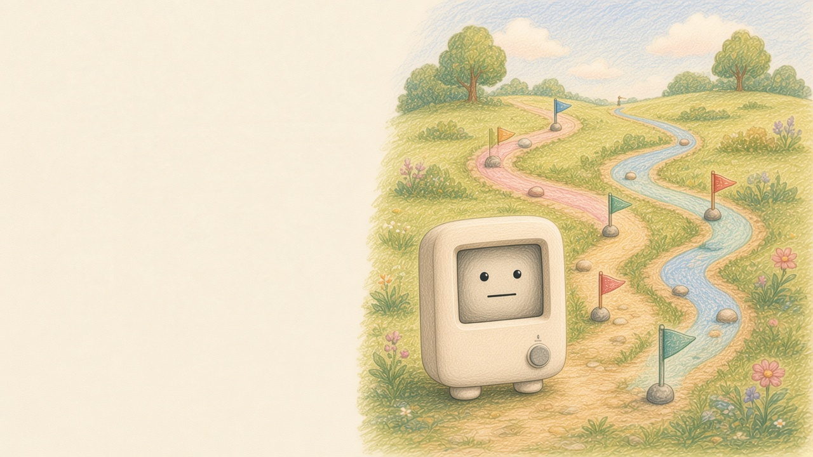
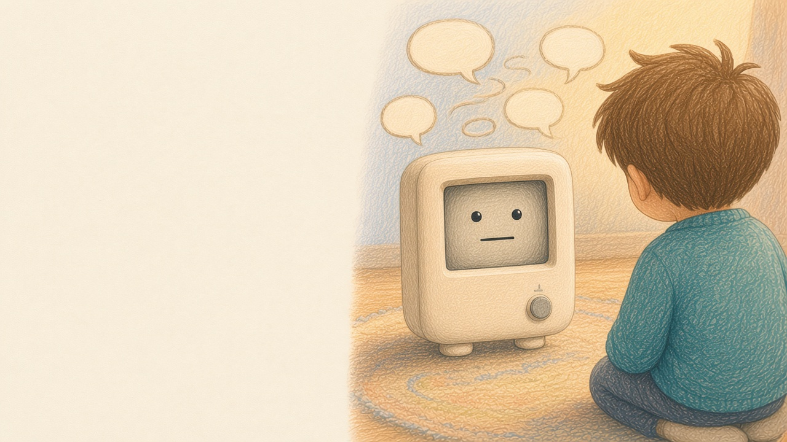
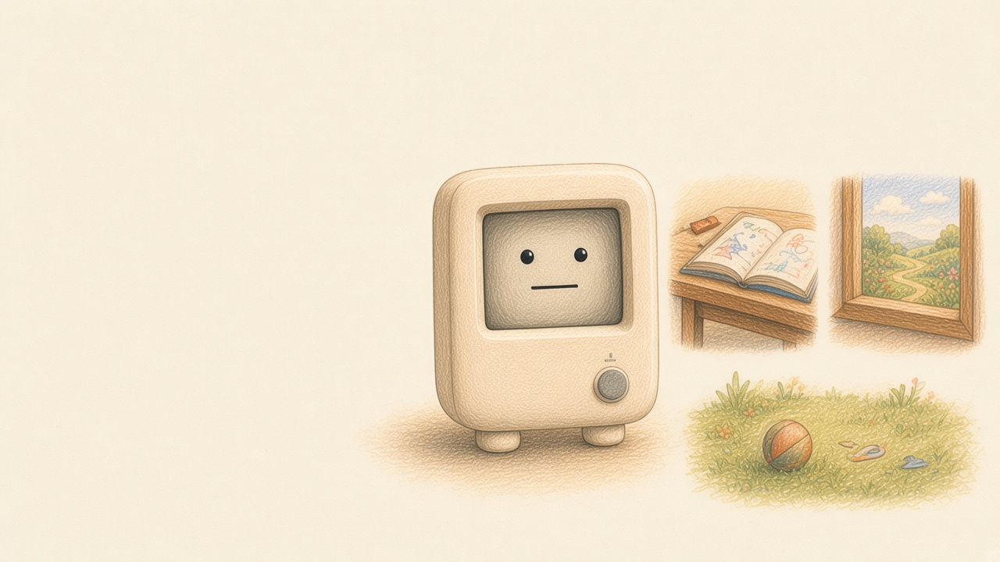

A path for every student
Your AI teacher meets each student where they are, and shapes a different path for every one. Task-based learning feels like an adventure — as playful as a game, and built on a clear, step-by-step structure.

Practice after the lesson, and parents get a summary of this session.
Try a lessonIt finally sits still for one short lesson.
I just asked out loud, and it talked me through it.
The practice is short enough to finish on the train.
Your AI teacher meets each student where they are, and shapes a different path for every one. Task-based learning feels like an adventure — as playful as a game, and built on a clear, step-by-step structure.

Interactive learning that adjusts in the moment to a child’s tone and ideas, with timely feedback. It guides and encourages their potential, so every conversation becomes a chance to learn.

Short, focused practice you can do in different places — refined lessons, wherever you are.
